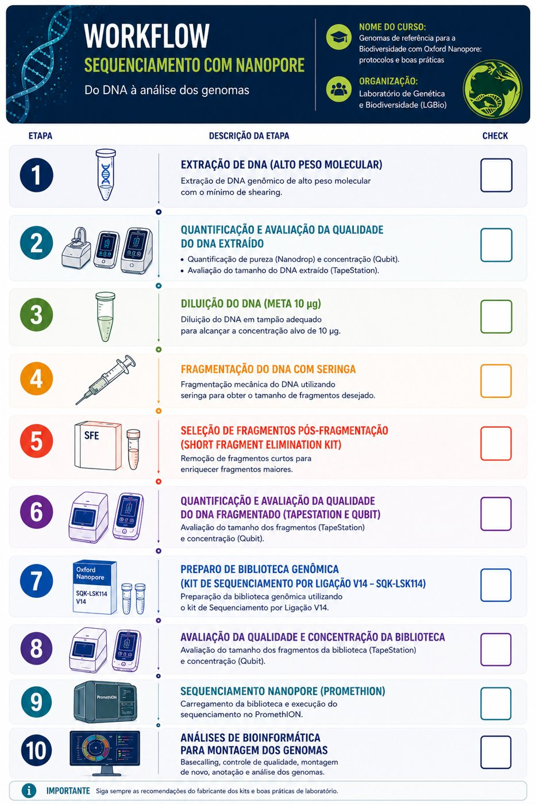

Curso de Ensamblaje de Genomas de Referencia con datos Nanopore¶
Edición 2026
Del 16 al 27 de noviembre de 2026 · Laboratório de Genética & Biodiversidade (LGBio), Instituto de Ciências Biológicas I, Campus II de la Universidade Federal de Goiás, Goiânia (GO), Brasil.
Idioma
El curso se imparte en portugués. Los protocolos están disponibles en portugués.
Información general¶
| Ítem | Detalle |
|---|---|
| Fechas | Del 16 al 27 de noviembre de 2026 (dos semanas) |
| Lugar | LGBio/ICB, Universidade Federal de Goiás (UFG), Goiânia, Brasil |
| Modalidad | Presencial |
| Idioma | Portugués |
| Coordinación | Dra. Mariana Pires de Campos Telles |
| Responsables | Dra. Mariana Pires de Campos Telles, Dra. Cíntia Pelegrineti Targueta, Dra. Carmen Elena Barragan Ruiz, Dra. Renata de Oliveira Dias, Dr. Rhewter Nunes y Dra. Ramilla dos Santos Braga Ferreira |
Programa¶
El curso aborda los principios, protocolos y herramientas necesarios para generar genomas de referencia de la biodiversidad, siguiendo las recomendaciones internacionales de calidad del Earth BioGenome Project (EBP). Se presentan todas las etapas del flujo de trabajo: planificación del muestreo, obtención de ADN de alto peso molecular, preparación de bibliotecas Oxford Nanopore, secuenciación de lecturas largas, controles de calidad, ensamblaje de los genomas, scaffolding, anotación, curaduría y depósito de los datos en repositorios públicos.
La parte práctica incluye la preparación de bibliotecas con el Ligation Sequencing Kit (SQK-LSK114), la secuenciación en la plataforma Oxford Nanopore PromethION 2 (P2) y la ejecución de pipelines bioinformáticos para el ensamblaje y la evaluación de genomas de referencia.
Requisito previo
Es necesario iniciar el curso con el ADN de alto peso molecular ya extraído.
Flujo de trabajo¶

Módulos¶
-
Parte 1 · Laboratorio
Control de calidad del ADN, fragmentación, selección de fragmentos, preparación de bibliotecas (SQK-LSK114) y secuenciación en el PromethION 2.
Disponible (en portugués)
-
Parte 2 · Bioinformática
Control de calidad de las lecturas, ensamblaje, evaluación, scaffolding, anotación, curaduría y depósito de los datos.
En construcción